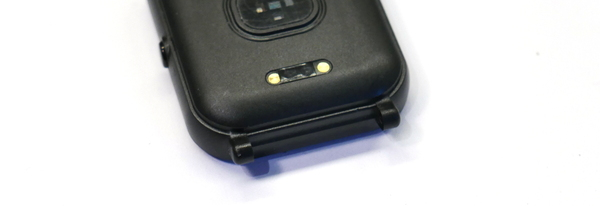
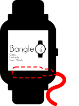

This is a long post. If you don’t want to read the whole thing, the TL;DR is below.
The Bangle.js 2 is an open-source, hackable smartwatch that runs Javascript (yes, you read that correctly). Is it as shiny and fast as the Apple Watch? No. However, comparing an Apple Watch to the Bangle.js 2 is like comparing apples (no pun intended) to oranges. The Bangle.js 2 isn’t going to be super-fast and 60Hz smooth (like the Apple Watch), but if you remember that you’re running Javascript on a SoC the size of a shirt button, then you’ll be impressed.
I’ve been looking for my first smartwatch, but have been in analysis paralysis for a while. I recently found the Bangle.js 2 and have been using it for a week now. These are my thoughts.
I’ll start by saying that I’m not a “watch person”. My daily driver is a Casio G-SHOCK GWM5610 (the only other watch I own is a dress watch that I wear once a year).
The GWM5610 is nothing but pragmatic. It has standard G-SHOCK toughness, 200-meter water resistance, and standard digital watch features (e.g., stopwatch, countdown timer, calendar, alarm, etc…). What sold me was that it has a small solar panel on the face and it gets the date/time via radio signals (what Casio calls Multiband 6). Combined, this means it never needs to be taken off my wrist, never needs to be charged, and the time never needs to be set (talk about pragmatic).
The GWM5610 lacks any “smart” features. I didn’t really want/need activity tracking, but sleep tracking and notifications would be nice.
For my computers, I run Linux and Windows at home, but I don’t use a Mac (except where I’m forced to at work). For my mobile phone, I prefer iOS over Android. I think Apple makes nicer hardware, there is no doubt that Apple collects less information than Google, and Apple does more on-device processing. I’m not saying that Apple is amazing, but they’re the lesser of two evils. 🤷♂️
So, given my requirements and background, I was looking for a glorified notification display to wear on my wrist, that worked with my iPhone, and any other features were extra.
I considered these commericially available smartwatches:
The package took about a week to arrive to my house in the US from the UK. In the box was the watch body, a strap, and a proprietary magnetic charging cable with pogo pins on one end and USB-A on the other.
The battery was dead on arrival, so I plugged it in and the “Welcome” tutorial ran.
The battery has a claimed four weeks of standby time. However, I’m not sure if “standby” means powered off, or with the screen on but backlight off, etc… Also, the battery life depends on what apps you’re using, and how often you receive notifications.
I charged the watch to 100% on a Sunday night, and it used about 15-20% per 24-hour period, which gave me about four days (Friday morning) before needing a recharge. During this time, I wasn’t running any sleep tracking or heart-rate monitoring.
The software that runs on the SoC is Espruino, an open-source Javascript interpreter for microcontrollers (which is exciting and terrifying at the same time).
Espruino (the software) powers a number of Espruino (the company) boards, and it is compatible with many third-party boards as well. Obviously, because it’s open-source, you can make your own apps for the watch (more on apps later).
The software that runs on the watch is quirky, but once you get the hang of it, it’s not too bad.
As far as I understand, everything in the interface is an app. This includes things that are obviously apps (e.g., the compass, the sleep tracker, etc…), but also system-level things (e.g., the launcher, the battery widget, the settings menu, etc…). The watch will ship with a default set of apps, but will need to be connected to Espruino’s App Loader to download new apps and updates (more on that process below).
The single hardware button is both the “menu” button, as well as the “back” button when navigating menus. Holding the button for two seconds in any screen will take you back to the watch face. Holding the button for ten seconds reboots the watch (you turn the watch off via the Settings menu).
All apps are loaded from a device (a phone or PC/laptop) via Web Bluetooth. This means you open a browser with Web Bluetooth support, browse to the App Loader website, connect to the watch inside the browser, then load apps from your device to the watch via Bluetooth.
I think this system is really slick (it’s also platform-agnostic), but it does have some drawbacks:
Right now, only Chrome/Chromium and Edge have Web Bluetooth support (and it needs to be enabled with an experimental flag)
iOS users can’t load apps using Safari (instead, you need to use a browser like WebBLE, or just use a PC/laptop)
You can’t connect the watch to two devices at once (e.g., you can’t connect it to your laptop to load apps while it’s connected to your phone)
As far as the overall experience goes, the App Loader is very responsive and quick to install apps. I should mention that the apps are all open-source, and Espruino makes development easy with documentation, a web IDE, and tutorials.
There is a basic dependency management system in place for apps. For example, installing the iOS Integration app installed a few other apps as dependencies.
The App Loader can also detect when a new app provides the same functionality as an existing app and offer to replace it. For example, since everything is an app (including the battery widget), when you install a new one, it offers to remove the old one.
App "Battery Level Widget" provides widget type "battery" which is already provided by "Battery Level Widget (with percentage)". What would you like to do?
[Replace] [Cancel] [Keep Both]
Out of the box, the LCD wasn’t registering my touches well, but in the Settings menu there was an option to calibrate the LCD, which made it much more responsive.
There will be a four-digit code (on two lines) in the top-right corner of the display. This is the watch’s identifier.
You’ll see this used when trying to pair the watch.
If you only have one watch (and don’t need to uniquely identify it), you can remove the app that displays this on the watch face (since everything in the watch is an app).
The “smart” features of a smartwatch don’t work unless you link it to your phone. I did this by installing the iOS Integration app from the Bangle.js App Loader website. This shares notifications from whatever is in your iOS Notification Center to your watch. Obviously it’s not going to display images and clickable links won’t work, but it vibrates, beeps, and generally gets your attention. When you dismiss notifications on your iPhone, they are dismissed on the watch.
One of the dependencies that was pulled in for the iOS Integration app was an app called Message Icons, which displays colored icons for a lot of different apps. This was really helpful because I could just glance at the watch to see which app gave me a notification, instead of having to open the notifications menu.
There are also a ton of other applications (471 as-of the time of this writing), ranging from different watch faces, to compasses, barometers, a sleep tracker, GPS, games, and more…
Below are some critiques I had (in no particular order). They were not show-stoppers, just ideas for a possible Bangle.js 3…
Plastic build: I would pay more money for a metal watch body.
Single hardware button: I’m sure it’s patented, but the Apple Watch has a hardware button, as well as Digital Crown that both rotates and presses inwards. Something like this would make navigating the watch interface easier.
Metal contacts touching skin: The watch has four metal contacts on the back (the outer two are for charging, the inner two are for debugging). Per the FAQ, the inner two have a small voltage running between them. The watch will ship with a piece of tape covering these two, but if the tape were to fall off, the direct contact with your skin could cause corrosion on the contacts or even skin irritation. This did not happen to me, but it’s something to be aware of.

Magnetic charger orientation: The magnetic charger needs to be attached to the watch from the right-side (if you’re looking at the screen). I wish the cable could be omni-directional, or use wireless charging (this would also remove the need for the metal contacts).

The magnets are weak: The magnets on the charger seem to do a good job aligning the pogo pings to the metal contact points, but they are so weak that the slightest bump makes the pins disconnect. I wish the magnets were stronger (or maybe that the pogo pins had less “spring”).
Make LCD calibration part of the initial “Welcome” tutorial: As I mentioned, the touchscreen response was very poor until I ran the LCD calibration. I wish the LCD calibration was part of the “Welcome” tutorial. Also, I might just have fat fingers.
The watch needs to track the phone’s silent mode: If your iPhone is in silent mode or using a Focus (like Sleep or Do Not Disturb), your watch will still get notifications. I had to manually set the watch to “quiet” time each night, then set it back each morning.
First, I learned that I’m not a smartwatch person. I don’t like having to charge another gadget. Plus, I don’t really like my phone buzzing to begin with, so having a device strapped to me that buzzes is honestly annoying.
However, this is a very nice device for what it is. For $106, you’re obviously not getting Apple-esque levels of hardware and software. But, if you understand what you are getting, you’ll be impressed (I was). For an open-source project, this is a very capable device. I’m not a developer, but if you are, this could be the perfect device for you.